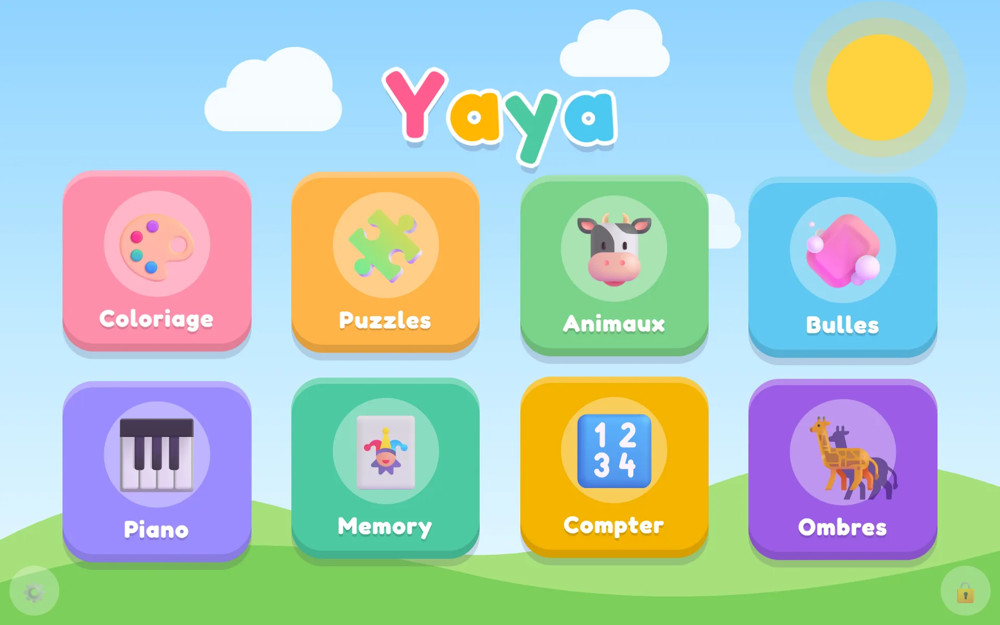
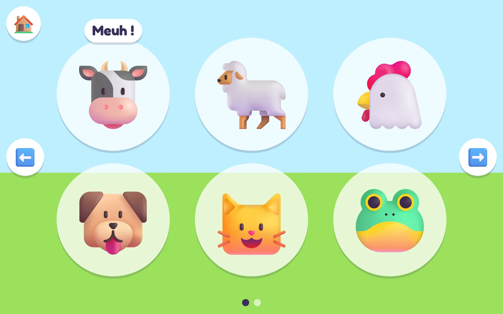
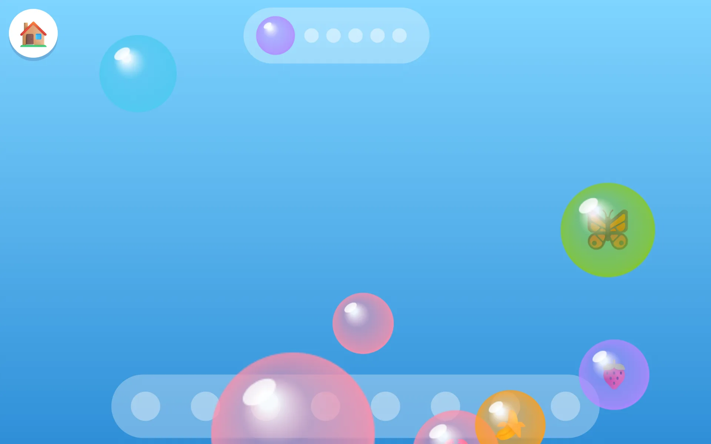
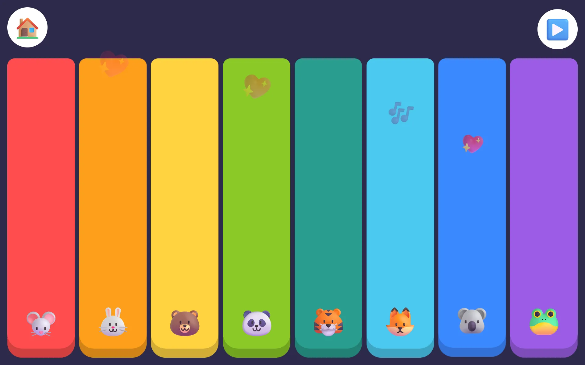
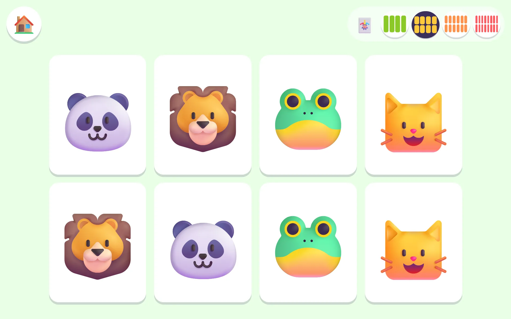

Coloriage
Le pot de peinture remplit les zones d'un seul doigt, le crayon dessine librement et la gomme répare les bêtises. 18 couleurs.
Les jeux de
Six petits jeux tout doux pour les petites mains :
on colorie, on emboîte, on écoute, on s'amuse.

Pas de texte à lire, de gros boutons, du son partout, et jamais de « perdu ».
Le pot de peinture remplit les zones d'un seul doigt, le crayon dessine librement et la gomme répare les bêtises. 18 couleurs.
De vraies pièces qui s'aimantent toutes seules, de 8 à 35 pièces, avec le modèle à regarder en cas de besoin.
24 animaux de la ferme, de la maison, de la savane et de la mer, qui sautent et poussent leur cri.
On éclate, on balaie, on souffle de nouvelles bulles. Mission couleur, bulle géante et pluie d'étoiles.
Huit touches arc-en-ciel avec leurs petits animaux, des notes qui s'envolent et « Au clair de la lune ».
Retrouver les paires, de 2 à 8. Et avec les photos de la famille, c'est encore mieux.






🎨 Le coloriage
L'appli ne demande aucune permission et rien ne sort de la tablette.
Moins de 100 Ko, pensée pour les petites tablettes pas très puissantes.
Ajoute des coloriages, des photos pour les puzzles et le memory, avec leur prénom dit par la voix.
On peut couper le narrateur, la musique et les cris restent.
Pour quitter ou régler, il faut appuyer 3 secondes : pas de sortie par accident.
Pas de chrono, pas de « perdu » : chaque toucher fait quelque chose de joli.
Ouvre cette page sur la tablette et touche le gros bouton rose.
Android demande d'autoriser les « applis inconnues » : accepte pour ton navigateur.
Ouvre « Les jeux de Yaya ». Pour une mise à jour, réinstalle par-dessus : rien n'est perdu.